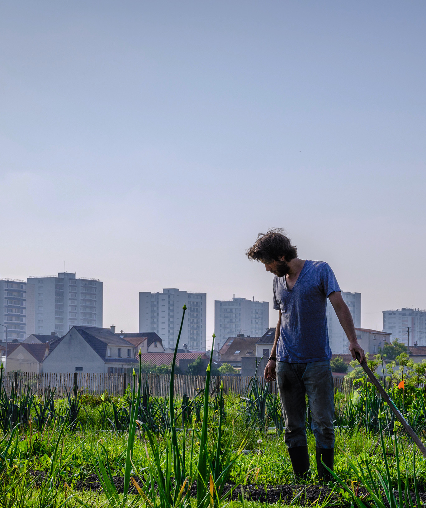

Et puis plusieurs petits maillons de la chaîne alimentaire ont commencé à se fissurer et à lui mettre le doute, à commencer par ses interrogations sur les conséquences de ce qu’il avalait sur sa santé. L’augmentation constante de diverses maladies, les incertitudes sur les pesticides, les OGM, les conservateurs, l’inconsistance de l’information sur les produits transformés, sur les provenances, la mise à jour des conséquences de l’élevage intensif sur le traitement des animaux et les divers scandales alimentaires, ont, en quelques années, transformé notre consommateur passif et heureux en un citoyen actif et en colère. Certes la colère qui pousse à saccager des boucheries ou des exploitations agricoles n’est pas de celle à faire avancer les choses, bien au contraire, mais elle est un signe de l’exaspération, de la fin d’une époque.
Les citoyens reprennent le pouvoir sur leur assiette et c’est tant mieux pour l’humain. Néanmoins, soixante ans de politique agroalimentaire extensive ne peuvent s’effacer d’un coup de baguette magique et l’heure est encore au chaos d’un monde ancien entrain de disparaître sans qu’une nouvelle organisation soit advenue.
Pour cette quatrième édition de Sortons l’agriculture du Salon, nous avons ainsi voulu mettre en avant les nombreuses initiatives citoyennes, celles qui prises individuellement ont l’air de gouttes d’eau dans une liste trop longue de nouvelles politiques à mettre en œuvre, mais qui, cumulées, commencent à faire masse critique et à esquisser ce que pourrait être l’économie générale d’une alimentation saine et durable de citoyens actifs et vigilants.
La manifestation qui fut dans ses premières éditions centralisée à Paris en miroir du Salon de la Porte de Versailles n’a aucune vocation à rester parisienne. Notre rôle est de fédérer, de centraliser les informations et de communiquer toutes les initiatives que vous pourrez prendre à l’occasion de cette semaine du Salon de l’Agriculture de la Porte de Versailles.